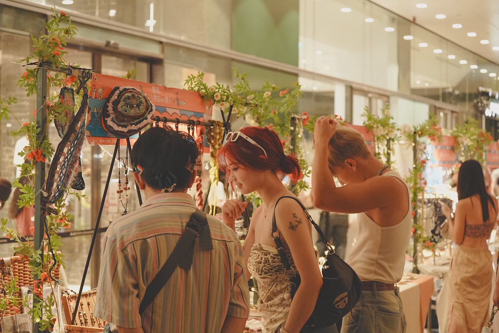
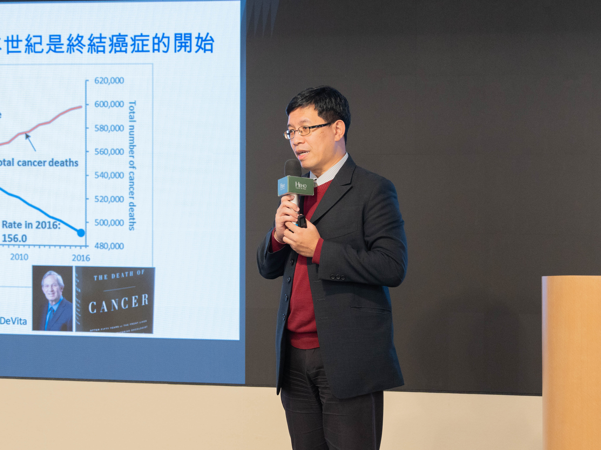
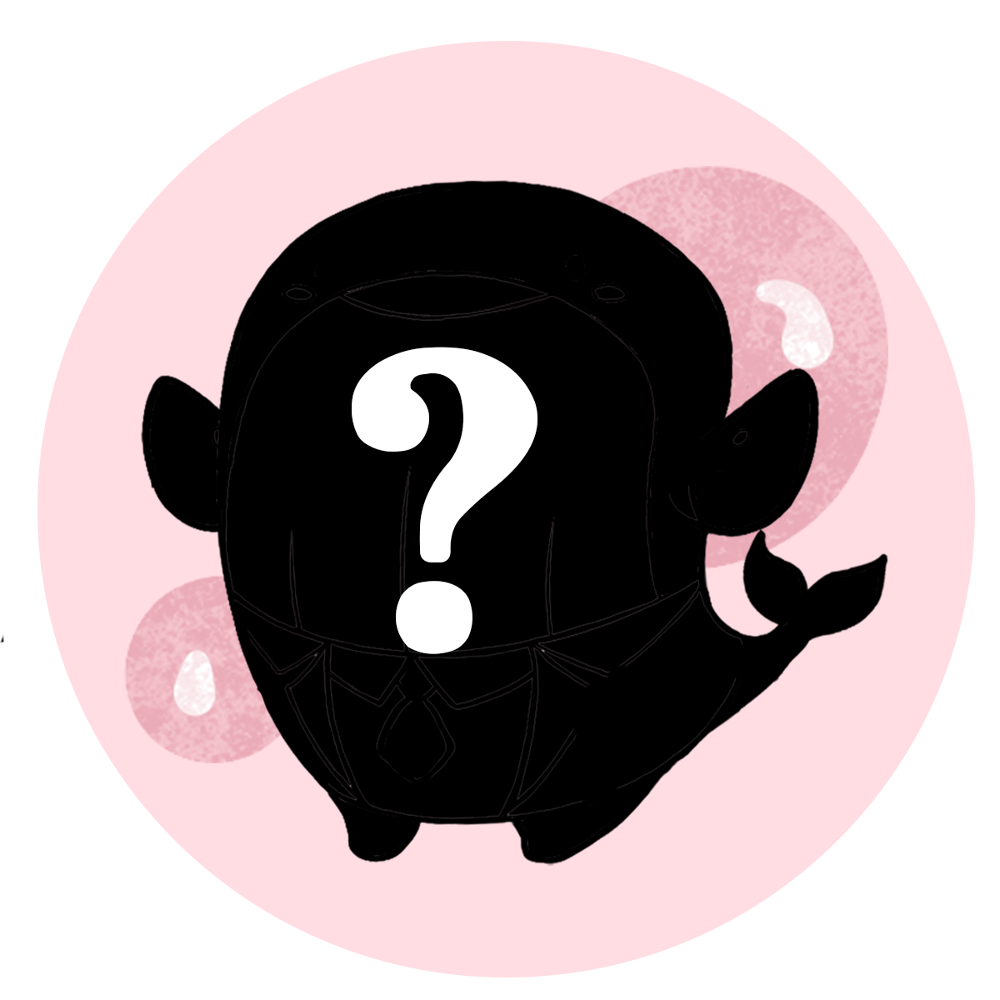
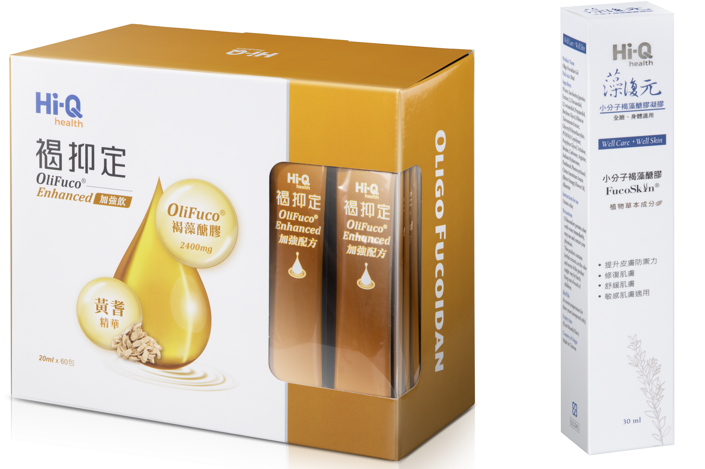
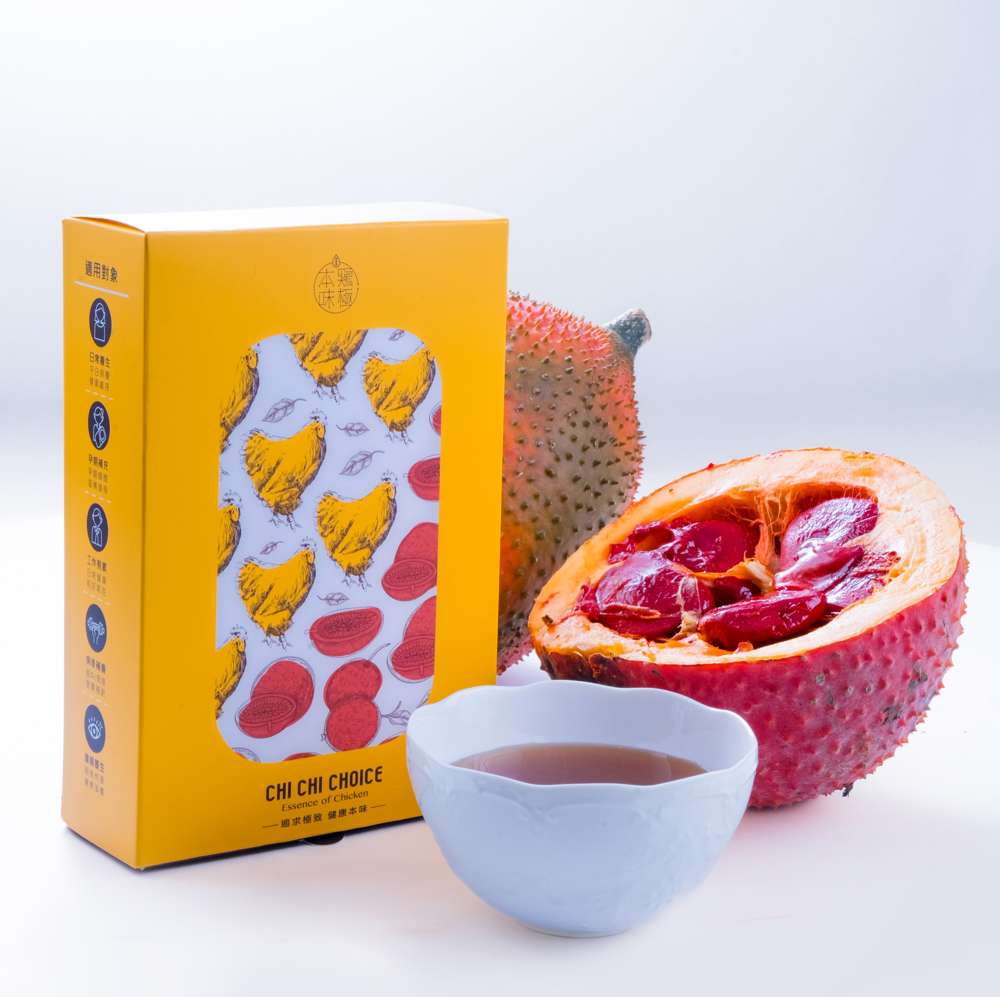

全台最大的抗癌派對
替身醫療論壇 5周年 重磅升級
市集 x 醫師講座 x 名人分享 x 手作體驗
過去多年，我們不停以行動關注健康議題，
藉由舉辦各式講座、市集與公益活動，
陪伴癌症病友與家屬走過挑戰。
我們希望透過這些活動，與癌友社群建立深厚的連結，
成為彼此分享、理解與支持的重要平台。
大家可以自由逛市集、聽講座、獲取營養資訊，
在輕鬆地氛圍中一次滿足健康需求。
4大精彩環節 不容錯過

健康市集
現場將匯聚多元攤位，從健康、養生到文創、飾品與美食，帶來豐富多彩的體驗。

專題講座
邀請權威專家與產業 KOL 分享身心靈健康技巧。
心靈諮詢
現場報名預約，由專業心理師提供一對一心靈支持服務，陪伴參與者傾聽內在聲音、舒緩情緒壓力，重拾面對生活與治療的力量。

線上報名抽好禮

祈福卡紙
只要於活動當天出示 重大傷病卡，即可參加「病友專屬抽獎」，將溫暖與祝福帶回家。
抽獎好禮包括：
- 【中華海洋 Hi-Q】鱸魚精禮盒（5入裝）× 4 份
- 【AromaFonda】香氛禮盒 × 1 份
- 【生機生技】金牌易利抗（10粒裝）× 30 份
- 【InSeed 益喜氏】好益思（30入）× 4 份
- 【起士公爵】小小公爵杯子乳酪蛋糕門市兌換券 × 10 份
抽獎好禮超過35萬元
 【Hi-Q】鱸魚精
【Hi-Q】鱸魚精5入提把禮盒

【Hi-Q】褐抑定60入+藻復元1條

【鷄極本味】木鱉果滴雞精
健康市集 X 邊緣人市集
本次活動我們與邊緣工事聯手打造全台最大的抗癌市集，除了涵蓋「健康餐飲」、
「營養保健食品」、「運動健身」、「旅遊」、「健康檢測」、「新創醫療」等多元主題外，
還有吸引大眾的文創展區，包含手作飾品、工藝創作、插畫設計、美食甜點與生活雜貨等，
讓市集不僅關乎健康，也充滿生活美學與趣味。
現場更有體驗式攤位、插畫工作室進駐，
以及超過 40 家品牌服飾、工藝品、輕食與特色小物，
打造一場人人都能盡情參與的嘉年華派對。
專題講座
邀請權威專家與產業KOL分享身心靈健康技巧
我們過去五年曾舉辦過多場癌症健康論壇
今年我們希望更多朋友一起共襄盛舉!
共同守護每一份珍貴的日常能量
Speakers
活動議程
| 時間 | 流程 | 講座 |
|---|---|---|
| 10:30-10:35 | 開場 | |
| 10:35-10:40 | 嘉賓致詞 | 衛生福利部國民健康署 沈靜芬 署長 |
| 10:40-10:45 | 國家衛生研究院 司徒惠康 院長 | |
| 10:45-10:50 | 立法委員 林楚茵 | |
| 10:50-10:55 | 合照 | |
| 10:55-11:15 | 活出日常能量 | 【璀璨蛻變心靈重生】 胃癌四期女星 唐玲 |
| 11:15-11:35 | 【聯合國給我們的健康建議是什麼？】 台北市立聯合醫院中興院區 整合醫學科 姜冠宇 醫師 |
|
| 11:35-11:40 | 抽獎 | |
| 11:40-12:15 | 午餐休息 | |
| 12:15-12:35 | 中場表演 | 癌友團體表演：日本舞 |
| 12:35-12:55 | 破解癌症之謎 | 【五大癌篩新挑戰：當早期異常遇見精準檢測】 馬偕醫院 生科部主任 陳冀寬 醫師 |
| 12:55-13:15 | 【從傳統篩檢到多癌種早篩：科技引領的新時代】 亞東紀念醫院 腫瘤暨血液科主治 鄧仲仁 醫師 |
|
| 13:15-13:35 | 【從藥物到生活，逆轉希望的治療選擇】 臺北醫學大學附設醫院 放射腫瘤科主治 呂隆昇 醫師 |
|
| 13:35-13:50 | 休息 | |
| 13:50-13:55 | 抽獎 | |
| 13:55-14:15 | 吃好物勤守護 | 【藻回生命新希望 遠離癌化體質】 許嘉桓 營養師 |
| 14:15-14:35 | 【營養迷思大破解：你以為健康，其實可能做錯了】 黃翠華 癌症關懷基金會 知識長 |
|
| 14:35-15:30 | 休息 | |
| 15:30-15:35 | 抽獎 | |
| 15:35-15:55 | 心靈關鍵時刻 | 【打怪升等攻略：我的癌症療程日記】 卵巢癌一期女星 林茉晶 |
| 15:55-16:15 | 【焦慮是因為太無聊？讓大腦重新忙起來】 心理師 Lynn |
|
| 16:15-16:35 | 【安寧不是一種放棄，而是一種醫療】 臺北癌症中心 副院長 趙祖怡 醫師 |
|
| 16:35-16:45 | 結語 | |
| 16:45-16:50 | 結束 | |
| ※ 議程若有異動，將由主辦單位保留最終調整之權利。 | ||